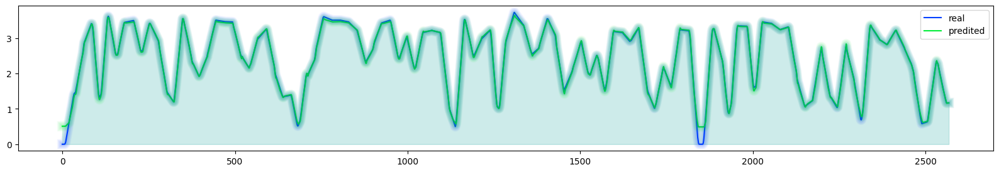
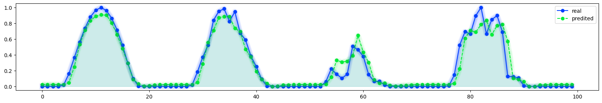
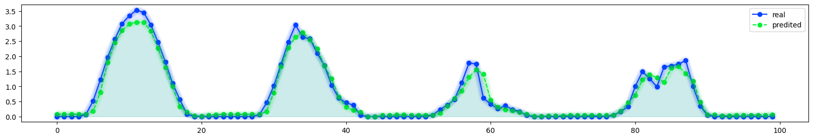
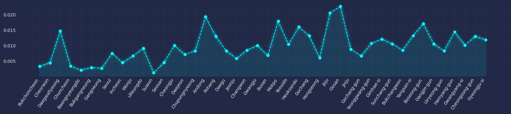

# modules
import numpy as np
import pandas as pd
import matplotlib.pyplot as plt
import seaborn as sns
import torch
import eptstgcn
import eptstgcn.planner
import torch_geometric_temporal
from torch_geometric_temporal.signal.static_graph_temporal_signal import StaticGraphTemporalSignal
import mplcyberpunk
# torch
import torch
import torch.nn.functional as F
#import torch_geometric_temporal
from torch_geometric_temporal.nn.recurrent import GConvGRU
# # utils
# def minmaxscaler(arr):
# arr = (arr - arr.min()) / (arr.max() - arr.min())
# return arr
# read data
def makedict(FX,W=None,node_ids=None):
T,N = np.array(FX).shape
if W==None:
W = pd.DataFrame(FX).corr().to_numpy().reshape(-1).tolist() # corr 로 weights
if node_ids==None:
node_ids = ['node'+str(n) for n in range(N)]
_dict={
'edges':[[i,j] for i in range(N) for j in range(N)],
'node_ids': node_ids,
'weights':W,
'FX':FX
}
return _dict
class Loader(object):
"""Hourly solar radiation of observatories from South Korean for 2 years.
Vertices represent 44 cities and the weighted edges represent the strength of the relationship.
The target variable allows regression operations.
(The weight is the correlation coefficient of solar radiation by region.)
"""
# def __init__(self, url):
# self.url = url
# self._read_web_data()
# def _read_web_data(self):
# self._dataset = json.loads(urllib.request.urlopen(self.url).read().decode())
def __init__(self, data_dict):
self._dataset = data_dict
def _get_edges(self):
self._edges = np.array(self._dataset["edges"]).T
def _get_edge_weights(self):
# self._edge_weights = np.array(self._dataset["weights"]).T
edge_weights = np.array(self._dataset["weights"]).T
#scaled_edge_weights = minmaxscaler(edge_weights)
self._edge_weights = edge_weights
"""
def _get_targets_and_features(self):
stacked_target = np.stack(self._dataset["FX"])
standardized_target = (stacked_target - np.mean(stacked_target, axis=0)) / (
np.std(stacked_target, axis=0) + 10 ** -10
)
self.features = [
standardized_target[i : i + self.lags, :].T
for i in range(standardized_target.shape[0] - self.lags)
]
self.targets = [
standardized_target[i + self.lags, :].T
for i in range(standardized_target.shape[0] - self.lags)
]
"""
def _get_targets_and_features(self):
stacked_target = np.stack(self._dataset["FX"])
self.features = np.stack([
stacked_target[i : i + self.lags, :].T
for i in range(stacked_target.shape[0] - self.lags)
])
self.targets = np.stack([
stacked_target[i + self.lags, :].T
for i in range(stacked_target.shape[0] - self.lags)
])
def get_dataset(self, lags: int = 4) -> StaticGraphTemporalSignal:
"""Returning the Solar radiation Output data iterator.
Args types:
* **lags** *(int)* - The number of time lags.
Return types:
* **dataset** *(StaticGraphTemporalSignal)* - The Solar radiation Output dataset.
"""
self.lags = lags
self._get_edges()
self._get_edge_weights()
self._get_targets_and_features()
dataset = StaticGraphTemporalSignal(
self._edges, self._edge_weights, self.features, self.targets
)
dataset.node_ids = self._dataset['node_ids']
return dataset
# arch
class RecurrentGCN(torch.nn.Module):
def __init__(self, node_features, filters):
super(RecurrentGCN, self).__init__()
self.recurrent = GConvGRU(node_features, filters, 2)
self.linear = torch.nn.Linear(filters, 1)
def forward(self, x, edge_index, edge_weight):
h = self.recurrent(x, edge_index, edge_weight)
h = F.relu(h)
h = self.linear(h)
return h
class RGCN_Learner:
def __init__(self,train_dataset,dataset_name = None):
self.train_dataset = train_dataset
self.lags = torch.tensor(train_dataset.features).shape[-1]
self.dataset_name = str(train_dataset) if dataset_name is None else dataset_name
self.method = 'RecurrentGCN'
def learn(self,filters=32,epoch=50):
self.model = RecurrentGCN(node_features=self.lags, filters=filters)
self.optimizer = torch.optim.Adam(self.model.parameters())
self.model.train()
for e in range(epoch):
for t, snapshot in enumerate(self.train_dataset):
yt_hat = self.model(snapshot.x, snapshot.edge_index, snapshot.edge_attr)
cost = torch.mean((yt_hat.reshape(-1)-snapshot.y.reshape(-1))**2)
cost.backward()
self.optimizer.step()
self.optimizer.zero_grad()
print('{}/{}'.format(e+1,epoch),end='\r')
# recording HP
self.nof_filters = filters
# self.epochs = epoch+1
self.epochs = epoch
def __call__(self,dataset):
X = torch.tensor(dataset.features).float()
y = torch.tensor(dataset.targets).float()
yhat = torch.stack([self.model(snapshot.x, snapshot.edge_index, snapshot.edge_attr) for snapshot in dataset]).detach().squeeze().float()
return {'X':X, 'y':y, 'yhat':yhat}
class WLRGCN_Leaner(RGCN_Learner):
def learn(self,W,filters=32,epoch=50):
self.model = RecurrentGCN(node_features=self.lags, filters=filters)
self.optimizer = torch.optim.Adam(self.model.parameters())
self.model.train()
n_ = np.array(train_dataset1.features).shape[1] # number of nodes
for e in range(epoch):
for t, snapshot in enumerate(self.train_dataset):
yt_hat = self.model(snapshot.x, snapshot.edge_index, snapshot.edge_attr)
#cost = torch.mean((yt_hat.reshape(-1)-snapshot.y.reshape(-1))**2)
# cost = torch.mean((yt_hat-snapshot.y)**2*torch.tensor(W))
cost = torch.mean((yt_hat.reshape(n_,1)-snapshot.y.reshape(1,n_))**2*torch.tensor(W))
cost.backward()
self.optimizer.step()
self.optimizer.zero_grad()
print('{}/{}'.format(e+1,epoch),end='\r')
# recording HP
self.nof_filters = filters
# self.epochs = epoch+1
self.epochs = epoch
# learn
def rgcn(FX,train_ratio,lags,filters,epoch):
dct = makedict(FX=FX.tolist())
loader = Loader(dct)
dataset = loader.get_dataset(lags=lags)
dataset_tr, dataset_test = eptstgcn.utils.temporal_signal_split(dataset, train_ratio = train_ratio)
lrnr = RGCN_Learner(dataset_tr, dataset_name = 'org & arbitrary')
lrnr.learn(filters=filters, epoch=epoch)
yhat = np.array(lrnr(dataset)['yhat'])
yhat = np.concatenate([np.array([list(yhat[0])]*lags),yhat],axis=0)
return yhat[SOLAR] EPT + RGCN
Import
Load data
# read dataframe
df = pd.read_csv('data_eng_230710.csv')
# make y, y_upper, y_period, time, regions
y = df.loc[:,'Bukchoncheon':'Gyeongju-si'].to_numpy()
yU = df.loc[:,'Bukchoncheon_Upper':'Gyeongju-si_Upper'].to_numpy()
yP = np.divide(y, yU+1e-10)
t = df.loc[:,'date']
regions = list(df.loc[:,'Bukchoncheon':'Gyeongju-si'].columns)
# plot rawdata
start = 50
end = 50+24*3
city = 19 # 광주
with plt.style.context('cyberpunk'):
plt.rcParams['figure.figsize'] = [20, 3] # [가로 크기, 세로 크기]
plt.plot(t[start:end],y[start:end,city],'o',label='y')
plt.plot(t[start:end],yU[start:end,city],'--',label='yU')
plt.plot(t[start:end],yP[start:end,city],'o',label='y/yU')
tick_interval = 4
plt.xticks(range(1, len(t) + 1, tick_interval),rotation=25)
plt.legend()
plt.title("The solar radiation data in {} from {} to {} ".format(regions[city],t.to_list()[0][:10],t.to_list()[-1][:10]))
mplcyberpunk.add_glow_effects() 
Learn
- y \(\to\) yhat
# hyper params
LAGS = 4
FILTERS = 8
EPOCH = 5
# global params
TRAIN_RATIO = 0.8
T,N = len(t),len(regions)
LEN_TEST = int(np.floor(T*(1-TRAIN_RATIO)))
LEN_TR = T - LEN_TEST
# 방법1
yhat = rgcn(y,train_ratio = TRAIN_RATIO, lags=LAGS,filters=FILTERS,epoch=EPOCH)
yhat[yhat < 0]= 0
# 방법2
yUhat = rgcn(yU,train_ratio = TRAIN_RATIO, lags=LAGS,filters=FILTERS,epoch=EPOCH)
yPhat = rgcn(yP,train_ratio = TRAIN_RATIO, lags=LAGS,filters=FILTERS,epoch=EPOCH)
yPhat[yPhat < 0] =0
classic = ((y - yhat)[LEN_TR:, :] ** 2)
proposed = ((y - yUhat*yPhat)[LEN_TR:, :] ** 2)
# print mse
print("""
total_mse(classic): {:.4f}
total_mse(proposed): {:.4f}
""".format(classic.mean(), proposed.mean()))5/5
total_mse(classic): 0.0619
total_mse(proposed): 0.0576
# plot
start = LEN_TR
end = LEN_TR + LEN_TEST
city = 20
tick_interval = 24
classic = (y - yhat)[start:end, :] ** 2
proposed = (y - yUhat*yPhat)[start:end, :] ** 2
print("""
total_mse(classic): {:.4f}
total_mse(proposed): {:.4f}
""".format(classic.mean(), proposed.mean()))
with plt.style.context('cyberpunk'):
plt.rcParams['figure.figsize'] = [20, 4] # [가로 크기, 세로 크기]
plt.plot(t[start:end],y[start:end,city],'-',label='real')
plt.plot(t[start:end],yhat[start:end,city],'--',label='predited(classic)')
plt.plot(t[start:end],(yUhat*yPhat)[start:end,city],'--',label='predited(proposed)')
plt.xticks(range(1, len(t[start:end]) + 1, tick_interval),rotation=25,ha='right')
plt.title("The predicted results in {} from {} to {} ".format(regions[city],t[start:end].to_list()[0][:10],t[start:end].to_list()[-1][:10]))
plt.legend()
mplcyberpunk.add_glow_effects()
total_mse(classic): 0.0619
total_mse(proposed): 0.0576

Analyze
- y vs yhat
with plt.style.context('cyberpunk'):
plt.rcParams['figure.figsize'] = [20, 3] # [가로 크기, 세로 크기]
plt.plot(y[50:150,0],'o-',label='real')
plt.plot(yhat[50:150,0],'o--',label='predited')
plt.legend()
mplcyberpunk.add_glow_effects() 
- yU vs yUhat
with plt.style.context('cyberpunk'):
plt.rcParams['figure.figsize'] = [20, 3] # [가로 크기, 세로 크기]
plt.plot(yU[:,25],label='real')
plt.plot(yUhat[:,25],label='predited')
plt.legend()
mplcyberpunk.add_glow_effects() 
- yP vs yPhat
with plt.style.context('cyberpunk'):
plt.rcParams['figure.figsize'] = [20, 3] # [가로 크기, 세로 크기]
plt.plot(yP[50:150,city],'o-',label='real')
plt.plot(yPhat[50:150,city],'o--',label='predited')
plt.legend()
mplcyberpunk.add_glow_effects() 
- y vs (yUhat*yPhat)
with plt.style.context('cyberpunk'):
plt.rcParams['figure.figsize'] = [20, 3] # [가로 크기, 세로 크기]
plt.plot(y[50:150,0],'o-',label='real')
plt.plot((yUhat*yPhat)[50:150,0],'o--',label='predited')
plt.legend()
mplcyberpunk.add_glow_effects() 
- 지역별분석